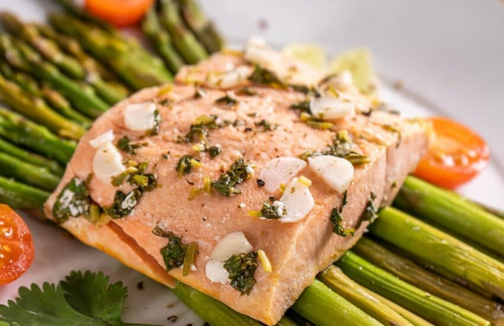

1. Ensalada de pollo: Una mezcla de hojas verdes, pollo a la parrilla, tomate cherry, pepino y aderezo ligero.
2. Brochetas de carne y vegetales: Trozos de carne magra (como pollo, ternera o pavo) intercalados con verduras como pimientos, cebolla y champiñones, todo a la parrilla.

3. Salmón con espárragos: Salmón a la parrilla con espárragos al vapor o asados, sazonados con limón y hierbas frescas.
4. Ensalada de atún: Atún enlatado sobre una cama de espinacas o lechuga, con tomate, aguacate y vinagreta balsámica.
5. Pollo al horno con vegetales asados: Pechuga de pollo al horno acompañada de zanahorias, calabacines, berenjenas y cebollas asadas.

6. Tacos de pescado: Pescado blanco (como el bacalao o la tilapia) cocido con especias y servido en tortillas de maíz con repollo rallado, tomate y salsa de yogur.

7. Pollo al curry con verduras: Trozos de pollo cocidos en una salsa de curry suave con calabacín, pimientos y espinacas, servidos sobre arroz integral.
8. Brochetas de camarones y vegetales: Camarones grandes y verduras (como pimientos, cebolla y calabacín) marinados y asados en brochetas